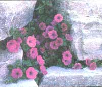
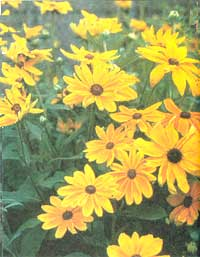
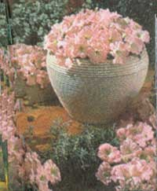

GEARING UP FOR THE SPRING GARDEN
PHOTOS: ALL-AMERICA SELECTIONS
Founded in 1933 by North American seed growers to encourage a degree of uniformity in home seed identification, All-America Selections tests hundreds of new seed varieties every year to determine the most athletic growers, the most disease resistant, and (in the case of both vegetables and flowers) the most beautiful candidates of the year.
Extensive as its vegetable trials are, AAS was unable to find any new edibles that qualified for special promotion this year. But this garden seed industry association is recommending three outstanding flower cultivars that should be of interest to those who, like ourselves, use low-growing bedding plants and taller background flowers only to add color to the vegetable garden. Two of the three newcomers are everyone's favorite: the petunia, one of which grows in a unique low, spreading habit. The third is a giant-flowered version of the American native Brown-Eyed Susan.
This is a second-generation hybrid petunia that, like most floribunda types, grows 18" tall and produces 2½" blooms 8 to 10 weeks after seed is sown. One unique feature is the pastel pink leaf color surrounding its cream throat. The flower is almost fluorescent when planted in quantity-say, in a circle to accent a birdbath. The color is likened to cotton candy at the county fair-a soft bubble gum pink that is striking yet reserved. Unlike many petunias, Celebrity Chiffon Morn blooms heavily and continually all through the season. It is light frost and drought tolerant and perks up with new blooms following even the worst beating by wind or rain. It does well in the greenhouse too, so packs of ready-to-bloom bedding plants will be available this mummer.
It isn't often that a whole new class of garden plants is developed. But here is the first in what will surely be a long line of low-growing ground cover style petunias. The double-hybrid plants are vigorous and each will spread in an "ocean wave" 2 to 4' across, producing vivid purple, trumpet-shaped blooms about 2" wide on stems that are no more than 4 to 6" high. Plants are highly weather tolerant.
The seed has demanding propagation requirements and it needs a lengthy 3 to 3½ months to flower, so you may want to obtain started plants from a greenhouse. Wherever grown, the aggressive rooting habit precludes conventional propagation in unsegregated soil clumps-where you can just pull apart individual plants in the block without harming them. Petunia Fl Purple Wave will be sold commercially in individual 3 or 4" pots or in hanging baskets. Seed isn't available till after May 1st, so started plants will not be ready for early spring planting this year. The variety is unusual enough, however, that a late-season trial will be worthwhile. AAS anticipates a strong demand for such an innovation, so get your order in early.
You see native Brown-Eyed Susans with their dark brown centers and golden daisy-shaped petals growing wild in open fields throughout the East during late summer each year. Plant breeders have been working for generations to improve the native plant for garden culture and, with Indian Summer, they have triumphed. Flowers are the familiar brown and gold colors, but are 6 to 9" across (compared to 2½"-wide wild flowers). The plant branches so it needs no staking and is relatively pest and disease free. It grows 3 to 3½' tall and as much around. The semilacy foliage has a vivid but coarse appearance, so it makes an excellent back-of-the-garden plant. The cut flowers are semirefined in appearance and will last for many days in water.
This nonhybrid is easily grown from seed, producing flowers 10 to 14 weeks after planting. You can buy seed this May and grow plants in plenty of time for a normal late-summer blooming period. AAS suggests that Rudbeckia is best grown as an annual, but we will mulch our own plants this fall and see if they regrow next spring, thus establishing the perennials that they are in the wild.
Note: Last year, when mentioning AAS selections, we inadvertently suggested that varieties can be submitted for testing only by Association members. Not so. Anyone can offer a newly developed vegetable or flower for consideration. Successful developers include the large seed companies, university research stations, and big-name hybridizers, of course-but also individuals. Developing a truly outstanding new variety is a rare event in any garden, home or commercial, but small-scale gardeners have created hybrids or reselections or have chanced on natural mutations that have changed the history of agriculture. The popular Delicious Apple was one such, and Augustinian Father Gregor Mendel developed the entire science of genetics while crossbreeding garden peas in a monastery garden between 1856 and '68. If your garden grows a flower or vegetable that is truly unique (and can turn out a whole lot of seed), contact AAS at (708) 963-0770 for requirements. And don't forget to keep MOTHER posted.
|
 Petunia Fl, Purple Wave. |
 Rudbeckia hirta, Indian Summer. |
 Petunia Fl, Celebrity Chiffon Mom. |